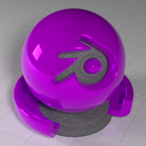
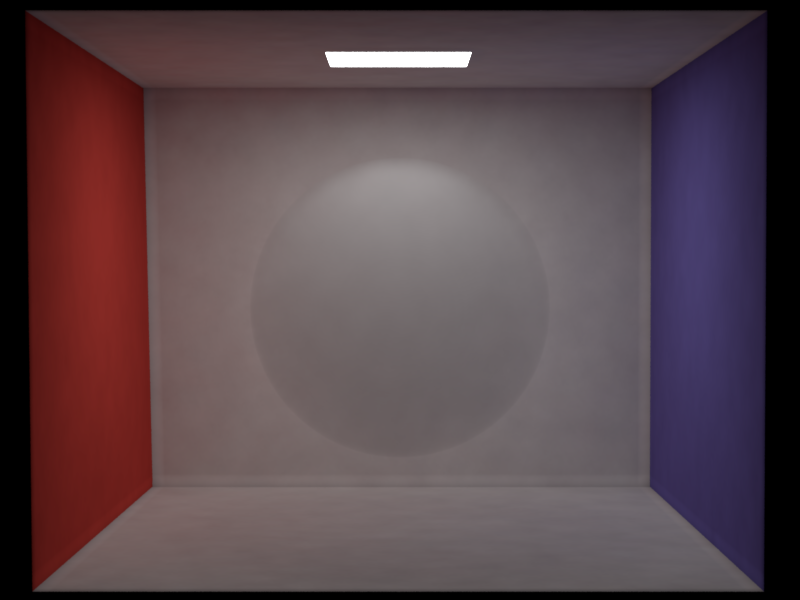

Please refer to dir "RC_yuhaitao" for the final rendered scene! Because I want to participate in the RC, I wrote a detailed html to introduce my final scene.
1. Image Textures && Normal Mapping (5pts)
Relevant classes normalTexture.cpp imageTexture.cpp mesh.cpp (modified) sphere.cpp (modified)I implemented feature Normal mapping based on Image as Texture which takes PNG images as inputs.
As to image as texutre, to properly handle PNG pics, I introduced library
lodepng and stored the RGB values in a vector.
The RGB value of each pixel is trivially interpolated from the given PNG to mapping the input image
to our target mesh. The texture can be easliy scaled in the xml.For Normal mapping, a new function
hasNormal() is added to each BSDF subclass. The mesh intersection fucntion
in Nori should also be changed to create a local frame based on the mapped normal (normal vector is simply
taken from the RBG of the input image via a trivial affine mapping \(2x - 1\), in order to make the range reasonable for a normal vector. That's the reason
why most normal mapping texture is almost blue,
for that (0,0,1) is unmodified default local normal, and also blue in RGB).
A combination with Image as texture with normal mapping is a good way emulate a true landscape
in an very efficient way, as long as two input PNGs consistent with each other.The result for my Image Textures && Normal Mapping is illustrated with a Suzanna mesh from blender. The texture is a very rough stone surface. Four comparisons include plain image, plain normal mapping, plain image mappping and "Image Texture + Normal Mapping".
Further validation on normal mapping is conducted based on
Integrator::Normals, for visualizing
the normal mapping. The mesh part is not identical due to the incoming normal PNG determines the normal of
local frame, but Normals integrator returns the world frame values.

These are the input textures:


2. Modeling Meshes (5pts)
The final scene for rendering competition is constructed with Blender, where mesh modeling is extensively needed. I didn't construct all the meshes. Some complicated ones are downloaded from the internet. But I have constructed some simply meshes, including some further editing on given meshes and arrange several meshes in good shapes.Here is an overview of my whole scene (from side-above and the camera view), which is constructed from scratch.

For editing meshes, I took three downloaded characters and replace their head with flower meshes in cater with my theme.


For constructing simple meshes and scene arrangement, I modeled some trivial ones and used them as some of my basic constructive elements in my scene, like the door frame, the cross and tours.
There are some other fancy staff, like the landscape mesh and tree generator which is the build-in plugin in blender. In addition, I also play around with the geometry nodes of blender for some no-trivial structure. I used the particle system for generating floating glowing particles (need mesh convertion) and the wireframe funtionality for a ico-wireframe mesh.
3. Disney BSDF (15pts)
Following section is about implementation for Disney principled BSDF. Roughness, specular(specularTint), metal(anisotropic), clearcoat(clearcoatGloss) and sheen(sheenTint) are implemented. 5 proposed ones will be detailed here.Two main reference are from UCSB and schuttejoe. A complete recitation of the theoretical calculation of different lobes would be too redundant here. Instead, some implement highlights are elucidated here:
(1): All lobe evaluations in UCSB have already considered the costheta of
wo, which is handled in both sample() and pdf() instead of in eval(), respect to Nori convention.(2): A complete diffuse part should be complemented with speuclar contribution assigned to a modified metallic lobe calculation. Thus, weight of specular part is always non-zero.
(3): Sampling of disney BSDF is a naive weighted sampling with three lobes: Diffuse part sampled with coshemisphere(); Clearcoat part sampled with Isotropic Trowbridge-Reitz Distribution(GTR2); Metallic part sampled with anisotropic GTR distribution.
Results
The performance of disneyBSDF is shown with an example scene from blender. DisneyBSDF is assigned to the outer shell of the object. Rendering is done on scenes with a gradually varying parameter of specific lobe, with other lobes parameters frozen for comparing. From upper to bottom: roughness(blue), specular(green), clearcoat(red), metal(purple) and sheen(white); From left to right: gradually increasing weight of specified lobe with 0.2 spacing.0.2 0.4 0.6 0.8 1.0


 

Validation
For importance sampling of disney BSDF, most critical part is to correctly implement the sampling and pdf of Trowbridge-Reitz Distribution(GTR1 for metal lobe, GTR2 for clearcoat lobe)/ In this part, the warptest results of GTR1 and GTR2 is shown to validate the consistency of these two distribution. Since GTRs depend on some prescribed input parameters, to clarify, I used a \((1,1,1)\) vector(normalized) as the incoming direction of GTR1 and sampling the half vector; I used \(\alpha = 0.1 \) as GTR2's input alpha, which should be a interpolation between 0.1 and 0.001.Unfortunately, I barely manage to make my DisneyBSDFs share zero difference with Mitsuba's principled BSDF. Some of them have slight but visible difference in tev. So, I didn't post my comparison with Mitsuba here. I have checked a lots of time and didn;t manage to find the mistake.
GTR1 GTR2
4. Heterogeneous Participating Media (30pts)
Relevant classes medium.h/.cpp vol_photonMapper.cpp In following section the implementation of the heterogeneous medium and the volumetric photonmapper are presented.
Medium
A heterogeneous medium is featured with a positional varying density, adsorption sigma_a and scattering coefficient sigma_s .
Albedo and transmittance can be computed from the above properties. Trivially, in this implementation, the medium
is not binded to a certian mesh(shape object), but only with a bounding box with assigned size and position. Even though
losing capability of constructing fancy medium with mesh, this implementation can support any analytic representation (explicit and implicit)
of shapes and the main feature of a heterogeneous medium: a positional varying property.
Comparing to a classic photonmapper, volumetric photonmapper need to handle the transmittance accumulation and the scattering of a phton in the medium. To tackle these two aspects, three main functionalities are expected from vol_photonMapper:
(1) A shape object that is responsible for the interaction between ray and medium. This is done with a bounding box(bbox for short) object, which is already implemented in Nori. Particularly, I used
rayIntersection() of bbox to determine the two intersection point of
a box and a ray, which is regarded as tmin and tmax for further transmittance calculation and sampling process.(2) Free path sampling, which importance sampling along the traced ray according to the transmittance. As to heterogeneous medium, the total transmittance(an integration of expotential sigma_t along the path) of a given path segment is intractable. Ray marching uses a baiased MC estimation (pairwise constant fucntion) for calculation this transmittance.
(3) Ray marching for re-collection of distributed photons: to re-collect the photons in the 3D volume and evaluate the radiance of a ray which pass a medium.
Given the settings above, a Heart shape fog-like medium with positional-varying optical property is created and rendered with
vol_photonMapper.cpp .
The density of the medium is determined with a linear decay function \(\frac{1}{r + 0.1}\).
The implicit shape representation funciton of heart is given as following:
Validation
Here is my validation for heterogeneous medium with a homogenous sphere reference in Mitsuba. Please note that, I used a bounding box for creation of a medium in a given scene. Any introduced shape apart from prescibed bounding box (with exact size) should be created withMedium::heterogeneous() function. Even though this is a homogenous sphere medium, it is actually created by assigning density
to each volumetric pixel according to the given sphere funciton. Thus, rendering this homogenerous sphere in bounding box can only be done with a heterogeneous
volumetric integrator with the above setting. Comparison it with a homogenerous sphere scene in Mitsuba can verify the correctness of implementation.

According to the comparison result in tev, a zero mean difference is obtained, but with a skewed variance distribution. This can be attributed to the difference of a path_mis tracer and a photonmapper.
Volumetric PhotonMapper with Ray Marching for heterogeneous media
Psuedocode of myvol_photonmapper:
prepocess()
while (true)
mesh_its = scene->RayIntersection()
if (!mesh_its)
if medium->rayinteraction(); # need to correctly handle the ray interaction point with both medium and mesh
... # use the build-in function RayIntersection() from Boundingbox for fast calculate of medium-ray interaction
FreePathDistribution() #sampling with ray marching estimation for transmittance
if(sample point inside medium)
deposit
sample_phaseFunction()
update traced Ray()
...
else
deposit and sample BSDF()
...
Russian Roulette;
Li()
while(true)
similar ray intersection for mesh and medium...
if(has interaction with medium)
ray marching along the ray until touching tmax #can be both mesh or medium boundaries
evaluate transmittance
re-collecting scattered photons in the medium
handle global t for accumulate the transmittance
if(no mesh intersection)
break;
calculate contribution of shadowray
re-collect photons on bsdf...
Russian Roulette;